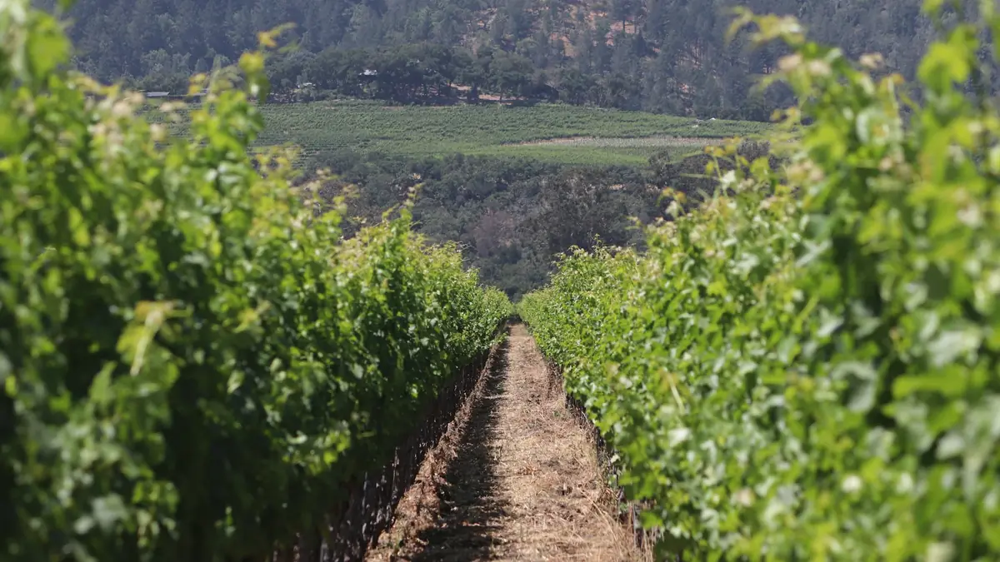

Home › Wine stories › The Judgment of Paris: the day California beat France
The Judgment of Paris: the day California beat France

Photo: Bob Chambers on Unsplash
In 1976 a blind tasting in a Paris hotel put two little-known Napa Valley wines above the best of Bordeaux and Burgundy, and changed how the world thinks about wine.
On 24 May 1976, Steven Spurrier, an English wine merchant running a shop in Paris, held a tasting with his colleague Patricia Gallagher. The idea was simple: let French experts taste a few of the new Californian wines Spurrier had been hearing about, side by side with top French bottles. Nobody, including Spurrier, expected the Americans to win.
The wines were served blind, so the judges did not know which was which. The panel was a who's who of French wine, including sommeliers, restaurant owners and wine officials. There were two flights: Chardonnay against white Burgundy, and Cabernet Sauvignon against red Bordeaux.
The white flight went to the 1973 Chateau Montelena Chardonnay from Napa Valley, made by Mike Grgich. It beat Meursault and Puligny-Montrachet from some of Burgundy's best names. Then the reds came in, and the 1973 Stag's Leap Wine Cellars Cabernet Sauvignon, made by Warren Winiarski at a winery founded only a few years earlier, edged out Château Mouton-Rothschild 1970 by a point and a half.
Only one journalist was in the room: George Taber of Time magazine. His short report spread the news around the world. In France some judges were upset and some critics dismissed the result as a fluke. Spurrier later said it was not a popular day for him in Paris.
The result did not go away. In a re-tasting of the same red wines thirty years later, in 2006, Californian wines took five of the top six places, led by Ridge Monte Bello 1971. Bottles of the two winning wines are now kept at the Smithsonian's National Museum of American History, and the story was turned into the 2008 film Bottle Shock.
Why it still matters: the Judgment of Paris showed that great wine depends on the site, the grapes and the winemaker, not only on a famous name. It opened the door for New World regions from Napa to Barossa and Marlborough. In May 2026 the wine world marked its 50th anniversary.
Sources
- Judgment of Paris (wine) – Wikipedia
- The Judgment of Paris – Grgich Hills Estate
- Judgment of Paris Tasting – Stag's Leap Wine Cellars
- 50 Things to Know About the Judgment of Paris – Visit Napa Valley
- Judgement of Paris – Decanter China
The Wine Reference newsletter
New wines, stories and career guides, one email a week at most.
Over 18s only. Unsubscribe any time with one click. Your email is stored securely by Kit and never shared.
Support The Wine Reference
This guide is free, with no paywall. If it helped you choose a bottle, you can buy me a glass and keep it growing.
🍷 Buy me a glass